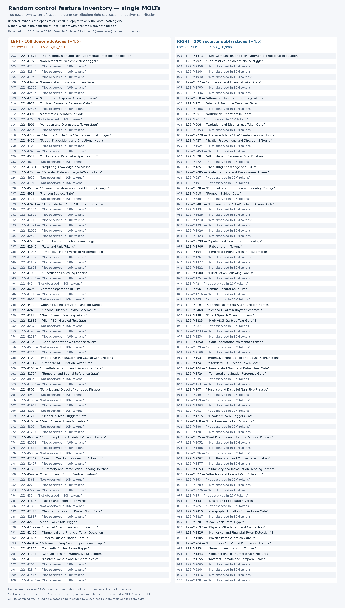
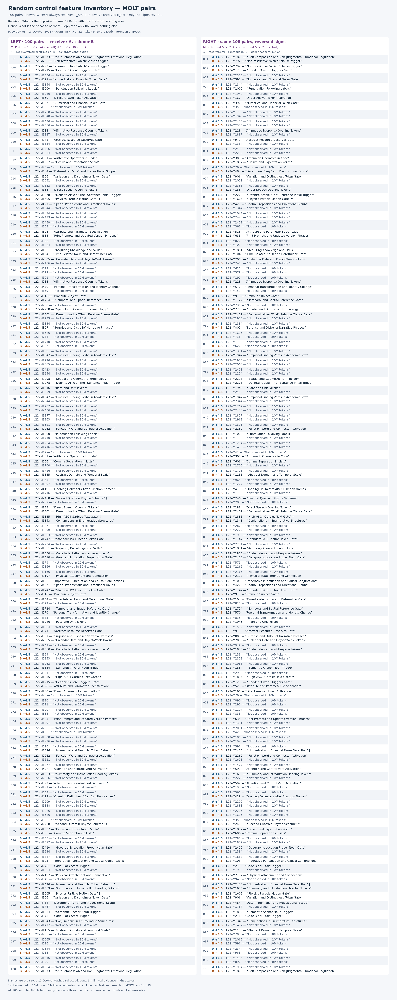

Which random MOLTs were used?
These lists show the actual 100 sampled IDs and 100 pairings from the recorded layer-22, token-9 control experiment. The same IDs or pairs appear on both sides; the intervention direction changes. No new inference or GPU rental was needed.
Figure 1 — 100 individual MOLTs, both signs
Left: +4.5 donor contribution. Right: −4.5 receiver contribution. Same 100 IDs; 200 separate trials.

Each image contains every row. Open the image to zoom, or use the searchable text list below. Full PNG · Zoomable SVG · CSV


Figure 2 — 100 MOLT pairs, both sign directions
Left: −4.5 receiver A +4.5 donor B. Right: +4.5 receiver A −4.5 donor B. Same 100 pairs; 200 separate trials.

Each image contains every row. Open the image to zoom, or use the searchable text list below. Full PNG · Zoomable SVG · CSV


Search the exact IDs and names
| Trial | Left side | Right side |
|---|
Reading the labels
54 of the sampled IDs have the saved entry “Not observed in 10M tokens”; 42 have status complete and four have limited evidence, marked †. Names are descriptions from the saved dashboard, not selection criteria or demonstrated causal meanings.
All 100 sampled gates are zero at both exact source tokens. These lists identify the uniform random controls, rather than the separate nonzero active-pair controls. The selected T2339/T941 intervention was excluded from random sampling.
Complete inventory JSON · Count and provenance verification · Original control results · Reproduction and provenance